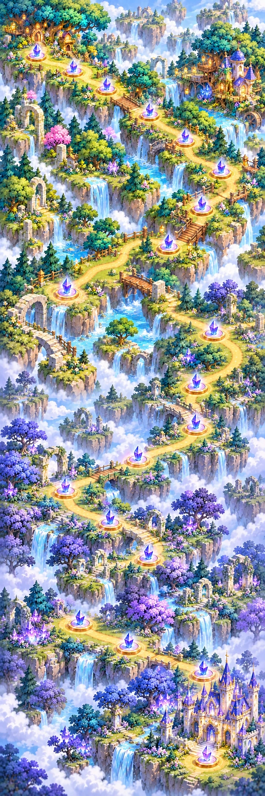

<!doctype html><html lang="ko"><meta charset="utf-8"><meta name="viewport" content="width=device-width,initial-scale=1"><title>월드 4 지도 검수</title><link rel="icon" href="../../assets/story/chapter-4-illusion-forest-map.webp"><style>.story-world-map{position:relative;isolation:isolate;width:100%;aspect-ratio:1090/1443;overflow:hidden;border:1px solid #cbdff0;border-radius:24px;background:#c9f0f5;box-shadow:inset 0 0 0 4px #ffffff8a,0 12px 28px #3932741c}
.story-world-map-art{position:absolute;inset:0;width:100%;height:100%;object-fit:fill}
.story-map-node{position:absolute;z-index:3;left:clamp(23px,var(--story-x),calc(100% - 23px));top:var(--story-y);transform:translate(-50%,-50%);display:grid;place-items:end center;width:10%;height:8%;min-width:44px;min-height:44px;padding:0;border:0;border-radius:50%;background:transparent;color:white;font-family:inherit;font-weight:900;line-height:1;box-shadow:none}
.story-map-node-number{position:absolute;top:86%;z-index:2;display:flex;align-items:center;gap:3px;justify-content:center;min-width:21px;height:21px;padding:0 5px;border:1px solid #ffffffdc;border-radius:999px;background:var(--violet);font-size:11px;box-shadow:0 2px 5px #24214c55}:root{--violet:#5751d8;--gold:#ffcf67}html,body{height:auto;min-height:100%;overflow:auto}body{margin:0;background:#f7f7ff;color:#282447;font-family:system-ui}main{max-width:420px;margin:auto;padding:16px}h1{font-size:24px}h2{font-size:20px}.story-world-map{aspect-ratio:2/3;margin-bottom:24px;border-radius:18px}.story-map-node{cursor:default}.story-world-map-4{aspect-ratio:1/3}.story-world-map-4 .story-map-node{height:2.667%}</style><main><h1>환각의 숲</h1><section class="story-world-map story-world-map-4"><span class="story-map-node" style="--story-x:13.909%;--story-y:6.445%" aria-label="스테이지 1"><span class="story-map-node-number">1</span></span><span class="story-map-node" style="--story-x:27.818%;--story-y:8.496%" aria-label="스테이지 2"><span class="story-map-node-number">2</span></span><span class="story-map-node" style="--story-x:40.264%;--story-y:10.742%" aria-label="스테이지 3"><span class="story-map-node-number">3</span></span><span class="story-map-node" style="--story-x:56.369%;--story-y:13.965%" aria-label="스테이지 4"><span class="story-map-node-number">4</span></span><span class="story-map-node" style="--story-x:69.693%;--story-y:17.09%" aria-label="스테이지 5"><span class="story-map-node-number">5</span></span><span class="story-map-node" style="--story-x:83.455%;--story-y:20.996%" aria-label="스테이지 6"><span class="story-map-node-number">6</span></span><span class="story-map-node" style="--story-x:76.135%;--story-y:25.586%" aria-label="스테이지 7"><span class="story-map-node-number">7</span></span><span class="story-map-node" style="--story-x:63.543%;--story-y:30.42%" aria-label="스테이지 8"><span class="story-map-node-number">8</span></span><span class="story-map-node" style="--story-x:25.037%;--story-y:36.182%" aria-label="스테이지 9"><span class="story-map-node-number">9</span></span><span class="story-map-node" style="--story-x:80.527%;--story-y:41.357%" aria-label="스테이지 10"><span class="story-map-node-number">10</span></span><span class="story-map-node" style="--story-x:74.085%;--story-y:47.949%" aria-label="스테이지 11"><span class="story-map-node-number">11</span></span><span class="story-map-node" style="--story-x:73.792%;--story-y:52.979%" aria-label="스테이지 12"><span class="story-map-node-number">12</span></span><span class="story-map-node" style="--story-x:51.977%;--story-y:57.227%" aria-label="스테이지 13"><span class="story-map-node-number">13</span></span><span class="story-map-node" style="--story-x:24.744%;--story-y:61.182%" aria-label="스테이지 14"><span class="story-map-node-number">14</span></span><span class="story-map-node" style="--story-x:41.581%;--story-y:65.234%" aria-label="스테이지 15"><span class="story-map-node-number">15</span></span><span class="story-map-node" style="--story-x:56.076%;--story-y:69.58%" aria-label="스테이지 16"><span class="story-map-node-number">16</span></span><span class="story-map-node" style="--story-x:30.307%;--story-y:78.027%" aria-label="스테이지 17"><span class="story-map-node-number">17</span></span><span class="story-map-node" style="--story-x:48.609%;--story-y:80.566%" aria-label="스테이지 18"><span class="story-map-node-number">18</span></span><span class="story-map-node" style="--story-x:76.867%;--story-y:84.375%" aria-label="스테이지 19"><span class="story-map-node-number">19</span></span><span class="story-map-node" style="--story-x:78.184%;--story-y:94.873%" aria-label="스테이지 20"><span class="story-map-node-number">20</span></span></section></main></html>